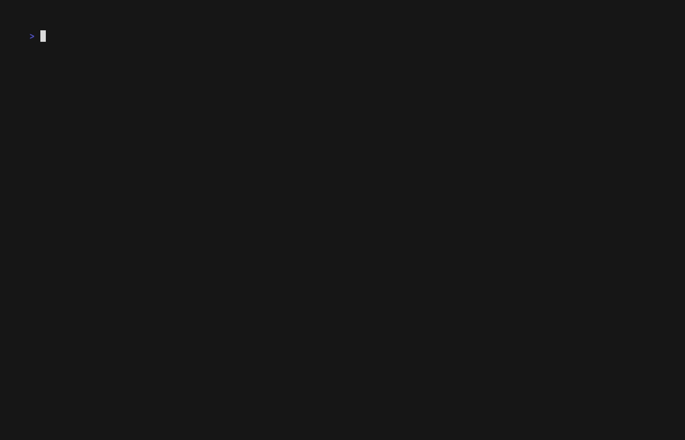

Teaching Workflow v3.0 Guide¶
Version: v5.14.0 Last Updated: 2026-01-21 Target Audience: Instructors using flow-cli for course management
Table of Contents¶
- Overview
- What's New in v3.0
- Getting Started
- Health Checks
- Content Creation Workflow
- Deployment Workflow
- Backup Management
- End of Semester
- Best Practices
- Troubleshooting
Overview¶
Teaching Workflow v3.0 provides a complete solution for managing course content from creation to deployment, with automated backups, health monitoring, and safe deployment previews.
Design Philosophy¶
- Safety First - Preview changes before deploying, backup before modifying
- Context-Aware - Auto-load lesson plans for better Scholar integration
- ADHD-Friendly - Clear status, visual feedback, minimal cognitive load
- Automated - Backups happen automatically, retention policies apply at semester end
What's New in v3.0¶
1. Environment Health Checks¶
Validates your entire teaching environment: - Required dependencies (yq, git, quarto, gh) - Optional tools (examark, claude) - Project configuration - Git setup (branches, remote) - Scholar integration
Why it matters: Catch setup issues before they cause problems during content creation.
2. Content Validation¶
The teach validate command provides comprehensive content validation for your Quarto files:
# YAML frontmatter validation only
teach validate --yaml
# Syntax validation (typos, unpaired delimiters)
teach validate --syntax
# Full render validation
teach validate --render
# Custom validators (if configured)
teach validate --custom
# Watch mode (auto-validate on file changes)
teach validate --watch
# Validate specific files or directories
teach validate lectures/week-05.qmd
teach validate lectures/
Validation modes:
| Mode | What It Checks | Speed |
|---|---|---|
--yaml |
Frontmatter syntax and required fields | Fast |
--syntax |
Code chunks, cross-references, links | Medium |
--render |
Full Quarto render validation | Slow |
--custom |
Custom validators from .teach/validators/ |
Varies |
3. Automated Backup System¶
Every content modification creates a timestamped backup:
lectures/week-05-regression.qmd
lectures/.backups/
└── week-05-regression.2026-01-18-1430/
└── week-05-regression.2026-01-17-0915/
└── week-05-regression.2026-01-15-1620/
Retention policies:
- Archive - Keep forever, move to .flow/archives/ at semester end
- Semester - Delete at semester end (with confirmation)
Why it matters: Accidentally deleted a paragraph? Restore from any backup point in seconds.
3. Enhanced Status Dashboard¶
Demo: Enhanced status showing comprehensive project overview
Shows everything at a glance: - Course and semester info - Current branch (draft/production) - Config validation status - Deployment status - Last deploy commit, open PRs - Backup summary - Total backups, sizes, last backup time - Content inventory
Why it matters: Complete situational awareness in one command.
4. Deploy Preview¶
Before creating a PR, see exactly what changed:
📦 Changes Preview
━━━━━━━━━━━━━━━━━━━━━━━━━━━━━━━━━━━━━━━━━
Files changed since last deployment:
🟢 A lectures/week-05-multiple-regression.qmd
🔵 M lectures/week-04-diagnostics.qmd
🔴 D _old/draft-notes.txt
Summary: 1 added, 2 modified, 1 deleted
View full diff? [y/N]
Why it matters: No surprises. Know exactly what students will see.
5. Scholar Template Selection¶
Demo: Using Scholar with templates and lesson plan auto-loading
Choose output format for generated content:
- markdown - Standard Markdown (default)
- quarto - Quarto document
- typst - Academic paper format
- pdf - Direct PDF output
- docx - Microsoft Word format
Why it matters: Generate content in your preferred format without manual conversion.
6. Lesson Plan Management (v5.22.0)¶
Create and manage lesson plans with the teach plan command:
# Create a week with topic and style
teach plan create 5 --topic "Multiple Regression" --style computational
# Create interactively (prompted for details)
teach plan create 6
# Auto-populate topic from teach-config.yml
teach plan create 7 --style applied
# List all plans with gap detection
teach plan list
# View a specific week
teach plan show 5
# Edit in $EDITOR (jumps to correct line)
teach plan edit 5
Plans are stored in .flow/lesson-plans.yml:
weeks:
- number: 5
topic: "Multiple Regression"
style: "computational"
objectives:
- "Understand multicollinearity"
- "Interpret regression coefficients"
subtopics: []
key_concepts: []
prerequisites: []
Scholar commands automatically load plans for enhanced context.
Why it matters: More targeted, course-specific content generation.
See: Tutorial 27: Lesson Plan Management
7. Smart Initialization¶
# Load departmental template
teach init --config ~/templates/stats-course.yml
# Create and push to GitHub in one step
teach init "STAT 440" --github
Why it matters: Faster setup, consistent configuration across courses.
8. Git Hooks Integration¶
Automated quality checks that run on git operations, catching errors before they reach GitHub.
Installation¶
# Install all teaching workflow hooks
teach hooks install
# Force reinstall (overwrites existing hooks)
teach hooks install --force
# Check what's installed
teach hooks status
Example output from teach hooks status:
Hook status:
✓ pre-commit: v1.0.0 (up to date)
✓ pre-push: v1.0.0 (up to date)
✓ prepare-commit-msg: v1.0.0 (up to date)
Summary: 3 up to date, 0 outdated, 0 missing
What Each Hook Does¶
1. pre-commit Hook - Validates content before commit
Runs automatically when you execute git commit:
# You run:
git commit -m "Add lecture 5"
# Hook automatically validates:
✓ YAML frontmatter syntax
✓ Required fields (title, date, week)
✓ Cross-reference integrity
✓ Sourced R file dependencies
✓ Code chunk syntax
Real-world example:
$ git commit -m "Add week 5 lecture"
Running pre-commit validation...
✓ YAML validation passed
✓ Dependencies verified
✗ ERROR: lectures/week-05.qmd missing required field: 'date'
Commit aborted. Fix the errors above and try again.
2. pre-push Hook - Ensures deployment readiness
Runs automatically when you execute git push:
# You run:
git push origin main
# Hook automatically checks:
✓ No uncommitted changes
✓ No untracked files in critical directories
✓ All required files present
✓ Git working tree is clean
Real-world example:
$ git push origin main
Running pre-push checks...
✗ ERROR: You have uncommitted changes:
M lectures/week-05.qmd
?? exams/midterm-draft.qmd
Please commit or stash these changes before pushing.
Push aborted.
3. prepare-commit-msg Hook - Auto-formats commit messages
Runs automatically before the commit message editor opens:
# You run:
git commit
# Hook automatically adds context:
# - Current week number
# - Timing information (if enabled)
# - Content type detection
# - Change summary
Real-world example:
# Before hook:
Your commit message: "update lecture"
# After hook enhancement:
[Week 5] Update lecture
- Modified: lectures/week-05-regression.qmd
- Render time: 3.2s
Co-Authored-By: Claude Sonnet 4.5 <noreply@anthropic.com>
Configuration Options¶
Control hook behavior with environment variables:
# ~/.zshrc or project-specific .envrc
# Enable full Quarto rendering on commit (slower but thorough)
export QUARTO_PRE_COMMIT_RENDER=1
# Use parallel rendering (default: on)
export QUARTO_PARALLEL_RENDER=1
export QUARTO_MAX_PARALLEL=4
# Add timing information to commit messages (default: on)
export QUARTO_COMMIT_TIMING=1
# Add validation summary to commit messages
export QUARTO_COMMIT_SUMMARY=1
# Skip hooks temporarily (use sparingly!)
git commit --no-verify -m "WIP: draft changes"
Configuration Examples:
Scenario 1: Fast iteration mode (development phase)
# Minimal validation, fast commits
export QUARTO_PRE_COMMIT_RENDER=0
export QUARTO_COMMIT_TIMING=0
export QUARTO_COMMIT_SUMMARY=0
# Commits are fast, hooks only check YAML syntax
Scenario 2: Production mode (before deployment)
# Full validation, comprehensive checks
export QUARTO_PRE_COMMIT_RENDER=1
export QUARTO_PARALLEL_RENDER=1
export QUARTO_MAX_PARALLEL=8
export QUARTO_COMMIT_TIMING=1
export QUARTO_COMMIT_SUMMARY=1
# Commits are slower but catch all issues
Scenario 3: CI/CD mode (automated workflows)
# Skip interactive prompts, JSON output
export QUARTO_HOOKS_QUIET=1
export QUARTO_HOOKS_CI=1
# Hooks run non-interactively, suitable for automation
Hook Management¶
Check for updates:
teach hooks status
# Output shows if upgrades available:
⚠ pre-commit: v0.9.0 (upgrade to v1.0.0)
⚠ pre-push: v0.9.0 (upgrade to v1.0.0)
Run 'teach hooks upgrade' to update outdated hooks
Upgrade hooks:
teach hooks upgrade
# Interactive confirmation:
Hooks to upgrade: 2
- pre-commit (v0.9.0 → v1.0.0)
- pre-push (v0.9.0 → v1.0.0)
Upgrade these hooks? [Y/n] y
✓ Upgraded pre-commit (v1.0.0)
✓ Upgraded pre-push (v1.0.0)
All hooks upgraded successfully (2 hooks)
Uninstall hooks:
teach hooks uninstall
# Safety confirmation:
⚠ This will remove all flow-cli managed hooks
Continue? [y/N] y
✓ Removed pre-commit
✓ Removed pre-push
✓ Removed prepare-commit-msg
Uninstalled 3 hook(s)
Common Workflows¶
Weekly content update with hooks:
# 1. Create new lecture
teach lecture "Multiple Regression" --week 5
# 2. Edit content
vim lectures/week-05-regression.qmd
# 3. Commit (hooks run automatically)
git add lectures/week-05-regression.qmd
git commit -m "Add week 5 lecture on multiple regression"
# Hook validates:
✓ YAML valid
✓ Dependencies checked
✓ Cross-references verified
[Week 5] Add week 5 lecture on multiple regression
- Added: lectures/week-05-regression.qmd
- Render time: 4.1s
# 4. Push (pre-push hook validates)
git push origin main
✓ Working tree clean
✓ All files committed
Push successful!
Emergency bypass (use with caution):
# Skip hooks for urgent fixes
git commit --no-verify -m "WIP: emergency fix"
git push --no-verify
# Later: validate manually
teach validate lectures/
Testing hooks without committing:
# Run pre-commit validation manually
.git/hooks/pre-commit
# Output shows what would happen:
Running pre-commit validation...
✓ All checks passed
Troubleshooting¶
Hook not running:
# Check if hooks are executable
ls -la .git/hooks/
# Should show:
-rwxr-xr-x pre-commit
-rwxr-xr-x pre-push
-rwxr-xr-x prepare-commit-msg
# If not executable:
chmod +x .git/hooks/pre-commit
chmod +x .git/hooks/pre-push
chmod +x .git/hooks/prepare-commit-msg
Hook fails with "command not found":
Hook takes too long:
# Disable full rendering for faster commits
export QUARTO_PRE_COMMIT_RENDER=0
# Or use parallel rendering
export QUARTO_PARALLEL_RENDER=1
export QUARTO_MAX_PARALLEL=8
Hook conflicts with existing hooks:
# Check what hooks exist
ls -la .git/hooks/
# Backup existing hooks before install
cp .git/hooks/pre-commit .git/hooks/pre-commit.backup
# Install (will backup automatically)
teach hooks install
# Existing hooks are backed up as:
# .git/hooks/pre-commit.backup-<timestamp>
Why Use Hooks?¶
Benefits:
- Catch errors early - Find issues before pushing to GitHub
- Consistent quality - Enforce standards automatically
- Save time - No manual validation needed
- Better commits - Auto-formatted messages with context
- Team consistency - Everyone uses same validation
Real-world impact:
Without hooks:
- Push broken YAML → CI fails → Fix → Push again (15 min)
- Forget to commit file → Incomplete push → Add missing file (10 min)
- Generic commit messages → Hard to track changes later
With hooks:
- YAML validated before commit → Never push broken files
- Pre-push checks catch missing files → Always complete
- Auto-formatted messages → Clear history
See Teaching Git Workflow Refcard for complete hook documentation and advanced configuration.
Getting Started¶
Step 1: Verify Environment¶
Before creating your first course:
If any checks fail:
Step 2: Initialize Course¶

Demo: Initializing a new teaching project with teach init
# Interactive mode (recommended for first time)
teach init "STAT 440 - Regression Analysis"
# Or use a template
teach init "STAT 440" --config ~/templates/stats-course.yml
# With GitHub repo creation
teach init "STAT 440" --github
What gets created:
.flow/teach-config.yml- Course configuration.gitignore- Teaching-specific patternsREADME.md- Course README- Directory structure:
lectures/exams/assignments/quizzes/slides/syllabi/rubrics/
Step 3: Create Lesson Plans (Optional but Recommended)¶
Use teach plan to create structured lesson plans that Scholar reads automatically:
# Create first few weeks
teach plan create 1 --topic "Introduction to Regression" --style conceptual
teach plan create 2 --topic "Simple Linear Regression" --style computational
teach plan create 3 --topic "Model Diagnostics" --style applied
# Review what you've created
teach plan list
Plans are stored in .flow/lesson-plans.yml and loaded by Scholar for targeted content generation.
Tip: If your teach-config.yml has week topics, teach plan create N auto-populates the topic.
See: Tutorial 27: Lesson Plan Management for the complete workflow.
Step 4: Verify Setup¶
Expected output:
📚 Teaching Project Status
━━━━━━━━━━━━━━━━━━━━━━━━━━━━━━━━━━━━━━━━━
Course: STAT 440 - Regression Analysis
Term: Spring 2026
Branch: draft
✓ Safe to edit (draft branch)
Config Validation:
✓ Valid (v1.2.0)
Content Inventory:
• Lectures: 0
• Exams: 0
• Assignments: 0
Health Checks¶

Demo: Running teach doctor to validate teaching environment
When to Run¶
- Initial setup - Before creating content
- Semester start - Verify environment ready
- After system updates - Check dependencies still work
- Troubleshooting - Diagnose issues
Basic Health Check¶
Output:
╭────────────────────────────────────────────────────────────╮
│ 📚 Teaching Environment Health Check │
╰────────────────────────────────────────────────────────────╯
Dependencies:
✓ yq (4.35.1)
✓ git (2.43.0)
✓ quarto (1.4.550)
✓ gh (2.42.1)
⚠ examark (not found - optional)
✓ claude (2.1.12)
Project Configuration:
✓ .flow/teach-config.yml exists
✓ Config validates against schema
✓ Course name: STAT 440
✓ Semester: Spring 2026
✓ Dates configured (2026-01-13 - 2026-05-01)
Git Setup:
✓ Git repository initialized
✓ Draft branch exists
✓ Production branch exists: main
✓ Remote configured: origin
✓ Working tree clean
Scholar Integration:
✓ Claude Code available
⚠ Scholar skills not detected
✓ Lesson plan found: lesson-plan.yml
────────────────────────────────────────────────────────────
Summary: 15 passed, 2 warnings, 0 failures
────────────────────────────────────────────────────────────
CI/CD Mode¶
For scripts and automation:
# Only show problems
teach doctor --quiet
# Machine-readable output
teach doctor --json | jq '.summary.status'
Interactive Fix Mode¶
Real-world example - Missing dependencies:
$ teach doctor --fix
╭────────────────────────────────────────────────────────────╮
│ 📚 Teaching Environment Health Check │
╰────────────────────────────────────────────────────────────╯
Dependencies:
✓ yq (4.35.1)
✓ git (2.43.0)
✗ quarto (not found)
✗ gh (not found)
⚠ examark (not found - optional)
Found 2 missing required dependencies.
Install missing dependencies? [Y/n] y
Installing quarto...
→ brew install quarto
✓ Installed quarto 1.4.550
Installing gh...
→ brew install gh
✓ Installed gh 2.42.1
Re-running health check...
Dependencies:
✓ yq (4.35.1)
✓ git (2.43.0)
✓ quarto (1.4.550)
✓ gh (2.42.1)
⚠ examark (not found - optional)
✓ All required dependencies installed!
Summary: 4 passed, 1 warning, 0 failures
Real-World Scenarios¶
Scenario 1: New machine setup
# Fresh macOS installation
teach doctor
# Output shows missing: yq, quarto, gh
teach doctor --fix
# Installs everything automatically
# Ready to start teaching!
Scenario 2: Semester preparation
# Week before classes start
cd ~/teaching/stat-440
teach doctor
# Check output:
# ✓ All dependencies present
# ✗ ERROR: Config missing required field: 'semester'
# ✗ ERROR: Draft branch not found
# Fix configuration
vim .flow/teach-config.yml
# Add: semester: "Spring 2026"
# Create draft branch
git checkout -b draft
# Verify fixes
teach doctor
# ✓ All checks passed
Scenario 3: CI/CD integration
# In GitHub Actions workflow
- name: Validate environment
run: |
teach doctor --json > health.json
if [[ $(jq '.summary.failures' health.json) -gt 0 ]]; then
echo "Health check failed"
jq '.failures[]' health.json
exit 1
fi
# Fails build if environment has issues
Scenario 4: Troubleshooting deployment issues
# Student reports broken website
teach doctor --quiet
# Output:
# ✗ Working tree not clean: 3 uncommitted files
# ✗ Remote not configured
# Fix issues
git add -A && git commit -m "Update content"
git remote add origin https://github.com/user/stat-440
# Verify
teach doctor
# ✓ All checks passed
# Deploy successfully
teach deploy
Scenario 5: Post-system-upgrade check
# After macOS upgrade or Homebrew update
teach doctor
# Output:
# ⚠ quarto (1.4.550) - newer version available: 1.5.0
# ⚠ gh (2.42.1) - newer version available: 2.43.0
# Optional: update tools
brew upgrade quarto gh
# Verify
teach doctor
# ✓ All up to date
Common Issues and Solutions¶
| Issue | Solution |
|---|---|
yq: command not found |
brew install yq or teach doctor --fix |
quarto: command not found |
brew install quarto or use installer from quarto.org |
gh: command not found |
brew install gh and run gh auth login |
| Config validation fails | Check YAML syntax: yq eval .flow/teach-config.yml |
| Git errors | Ensure repo initialized: git init |
| Remote not configured | Add remote: git remote add origin <url> |
| Working tree not clean | Commit changes: git add -A && git commit |
| Scholar skills not found | Install Scholar plugin in Claude Desktop |
Content Creation Workflow¶
Weekly Pattern¶
Monday: Plan week's content
# Check current week
teach week
# Output:
# 📅 Current Week: 5
# 📚 Course: STAT 440 - Regression Analysis
# 🗓️ Date Range: Feb 10-14, 2026
# 📝 Topic: Multiple Regression
# View lesson plan details
cat lesson-plan.yml | yq ".weeks[] | select(.number == 5)"
# Output:
# number: 5
# topic: "Multiple Regression"
# dates: "2026-02-10 - 2026-02-14"
# learning_objectives:
# - "Understand multicollinearity"
# - "Interpret regression coefficients"
# - "Calculate adjusted R-squared"
# key_concepts:
# - "VIF (Variance Inflation Factor)"
# - "Partial F-tests"
# - "Model selection criteria"
Tuesday-Thursday: Create content
# Create lecture with auto-loaded lesson plan context
teach lecture "Multiple Regression" --week 5
# Scholar uses lesson plan to generate targeted content:
# ✓ Learning objectives included
# ✓ Key concepts explained
# ✓ Examples aligned with course level
# Content is automatically backed up
# Scholar auto-loads lesson-plan.yml for context
Friday: Create assessments
# Create quiz
teach quiz "Week 5 Quiz" --questions 10 --time-limit 15
# Create homework
teach assignment "Homework 4" \
--due-date "2026-02-18" \
--points 100
Weekend: Review and deploy
Creating Exams¶
Midterm exam:
teach exam "Midterm - Chapters 1-5" \
--questions 30 \
--duration 120 \
--types "mc,short,essay" \
--template typst
What happens:
- Scholar loads
lesson-plan.ymlfor context - Generates exam in
exams/midterm.typ - Creates timestamped backup in
exams/.backups/ - Offers to commit with auto-generated message
Final exam:
Creating Assignments¶
teach assignment "Problem Set 3 - Diagnostics" \
--due-date "2026-03-01" \
--points 100 \
--template docx
Scholar will include:
- Problem statements from lesson plan
- Relevant course concepts
- Grading criteria
- Due date in YAML frontmatter
Creating Lecture Materials¶
Lecture notes:
Slides from lecture:
Guest lecture (custom styling):
Template Selection Guide¶
| Format | Use Case | Command |
|---|---|---|
markdown |
Web content, GitHub | Default |
quarto |
Academic papers, reports | --template quarto |
typst |
LaTeX alternative, clean PDFs | --template typst |
pdf |
Direct PDF generation | --template pdf |
docx |
Sharing with non-technical collaborators | --template docx |
Deployment Workflow¶

Demo: Deploying to preview branch with teach deploy --preview
Overview¶
Teaching Workflow v3.0 uses a draft → production PR-based workflow:
- Work on
draftbranch - Preview changes before deploying
- Create PR (draft → main/production)
- Review and merge on GitHub
- Site automatically rebuilds
Standard Deployment¶
# 1. Check current status
teach status
# 2. Ensure on draft branch
git checkout draft
# 3. Commit any changes
g status
g commit "feat: add Week 6 content"
# 4. Deploy with preview
teach deploy
Deploy Preview¶
📦 Changes Preview
━━━━━━━━━━━━━━━━━━━━━━━━━━━━━━━━━━━━━━━━━
Files changed since last deployment:
🟢 A lectures/week-06-collinearity.qmd
🟢 A assignments/homework-05.qmd
🔵 M syllabi/schedule.qmd
🔵 M _quarto.yml
🔴 D _old/scratch.txt
Summary: 2 added, 2 modified, 1 deleted
View full diff? [y/N]
Options:
y- View full diff with syntax highlightingn- Skip and proceed to PR creation
Pull Request Creation¶
After preview, PR is automatically created:
✓ Pull request created: #42
Title: Week 6 content deployment
URL: https://github.com/user/course/pull/42
Commits included:
• a1b2c3d - feat: add Week 6 lecture on collinearity
• e4f5g6h - feat: add Homework 5
• i7j8k9l - docs: update schedule
Review and merge on GitHub when ready.
Pre-flight Checks¶
teach deploy automatically checks:
- ✅ On draft branch
- ✅ No uncommitted changes
- ✅ Remote up-to-date
- ✅ No conflicts with production
If any check fails, you'll get clear instructions:
✗ Error: Uncommitted changes detected
You have 3 uncommitted files:
M lectures/week-06.qmd
M _quarto.yml
?? scratch.txt
→ Commit or stash changes first:
g commit "your message"
g stash
Direct Push (Advanced)¶
Bypass PR workflow for hotfixes:
⚠️ Warning: Use sparingly. PR workflow provides: - Change review before going live - Deployment history - Rollback capability
Backup Management¶

Demo: Automated backup system with retention policies
How Backups Work¶
Automatic backups:
Every time you modify content (via Scholar or manual edit), a backup is created:
lectures/week-05.qmd
lectures/.backups/
└── week-05.2026-01-18-1430/ # Latest
└── week-05.2026-01-17-0915/ # Yesterday
└── week-05.2026-01-15-1620/ # Last week
Retention policies:
Configure in .flow/teach-config.yml:
backups:
retention:
assessments: archive # Keep exam/quiz backups
lectures: semester # Delete at semester end
syllabi: archive # Keep syllabus backups
View Backup Status¶
Output includes:
Backup Summary:
Total backups: 12 across all content
Last backup: 2026-01-18 10:15 (4 hours ago)
By content type:
• Exams: 3 backups (4.2 MB)
• Lectures: 5 backups (8.1 MB)
• Assignments: 4 backups (2.3 MB)
Restore from Backup¶
Manual restore:
# 1. Find backup you want
ls -lt lectures/.backups/
# 2. Copy content back
cp -R lectures/.backups/week-05.2026-01-15-1620/* \
lectures/week-05.qmd
Using git (if backed up):
# Find when file was good
git log --oneline lectures/week-05.qmd
# Restore specific version
git checkout <commit-hash> lectures/week-05.qmd
Delete Old Backups¶
Safe deletion (with confirmation):
Force deletion (scripts):
Archive at Semester End¶
What happens:
- Applies retention policies:
- Archive - Moves to
.flow/archives/Spring-2025/ -
Semester - Deletes after confirmation
-
Generates summary:
✓ Archive complete: .flow/archives/Spring-2025
Archived: 8 content folders
Deleted: 5 content folders (semester retention)
End of Semester¶
Checklist¶
- [ ] Deploy final content
- [ ] Grade and release final exams
- [ ] Archive backups
- [ ] Update
.STATUSfiles - [ ] Create semester tag
- [ ] Prepare for next semester
Step-by-Step¶
1. Final deployment
# Check everything is committed
g status
# Deploy
teach deploy
# Verify PR merged
gh pr list --state merged
2. Archive backups
3. Create semester tag
# Tag final state
git tag -a spring-2025-final -m "End of Spring 2025 semester"
git push origin spring-2025-final
4. Update .STATUS
# .STATUS
status: complete
progress: 100
archived: 2025-05-15
next_semester: Fall 2025
notes: |
Spring 2025 semester complete.
Archive: .flow/archives/Spring-2025
5. Prepare for next semester
# Update config for new semester
teach config
# Update these fields:
# course.semester: Fall
# course.year: 2025
# semester_info.start_date: 2025-08-25
# Initialize dates
teach dates init
Best Practices¶
1. Use Lesson Plans¶
Create at semester start:
# Create plans for key weeks
teach plan create 1 --topic "Introduction" --style conceptual
teach plan create 2 --topic "Foundations" --style computational
# Or create all weeks using config auto-populate
for w in $(seq 1 15); do
teach plan create $w --style conceptual
done
# Review for gaps
teach plan list
Benefits:
- Scholar generates more targeted content
- Consistent terminology across materials
- Easy to revise with
teach plan edit N - Gap detection warns about missing weeks
2. Regular Health Checks¶
3. Commit Often¶
# After creating each piece of content
g commit "feat: add Week 5 lecture"
g commit "feat: add Homework 4"
# Not this
g commit "added a bunch of stuff"
Why: Easy to track what changed, revert if needed.
4. Preview Before Deploy¶
5. Backup Configuration¶
Conservative settings (default):
backups:
retention:
assessments: archive # Safe: keep forever
lectures: archive # Safe: keep forever
syllabi: archive # Safe: keep forever
Aggressive settings (if disk space limited):
backups:
retention:
assessments: archive # Keep exams
lectures: semester # Delete lecture backups
syllabi: archive # Keep syllabus
6. Use Templates¶
Department template:
# ~/templates/stats-course.yml
course:
department: "Statistics"
level: "400"
credits: 3
instructor: "Dr. Smith"
branches:
draft: draft
production: main
backups:
retention:
assessments: archive
lectures: semester
syllabi: archive
Use it:
Troubleshooting¶
teach doctor Fails¶
Issue: Missing dependencies
# View what's missing
teach doctor
# Install missing tools
brew install yq gh quarto
# Verify fix
teach doctor
Issue: Config validation fails
# Check syntax
yq eval .flow/teach-config.yml
# View schema
cat lib/templates/teaching/teach-config.schema.json
# Common issues:
# - Invalid date format (use YYYY-MM-DD)
# - Missing required fields (course.name, semester_info)
# - Invalid YAML syntax
teach deploy Fails¶
Issue: Not on draft branch
Issue: Uncommitted changes
Issue: Conflicts with production
# Fetch latest
git fetch origin main
# Rebase
git rebase origin/main
# Resolve conflicts
# Edit conflicted files
g add .
git rebase --continue
# Deploy
teach deploy
Issue: Config file not found
Backup Issues¶
Issue: Backups taking too much space
# View sizes
teach status
# Archive old semester
teach archive "Fall 2024"
# Or manual cleanup
rm -rf lectures/.backups/*2024*
Issue: Can't restore backup
# Verify backup exists
ls -la lectures/.backups/
# Check permissions
ls -ld lectures/.backups/
# Restore manually
cp -R lectures/.backups/week-05.LATEST/* lectures/
Scholar Integration Issues¶
Issue: Lesson plan not loading
# Verify file exists
ls -la lesson-plan.yml
# Check syntax
yq eval lesson-plan.yml
# Validate against schema
teach doctor
Issue: Scholar not generating context-aware content
# Check Scholar installed
teach doctor
# Verify lesson plan format
cat lesson-plan.yml
# Try explicit context
teach exam "Topic" --context
Advanced Usage¶
Automation Scripts¶
Weekly deployment script:
#!/usr/bin/env zsh
# weekly-deploy.sh
# Health check
teach doctor --quiet || exit 1
# Ensure clean state
if [[ -n "$(git status --porcelain)" ]]; then
g commit "feat: week $(date +%V) content"
fi
# Deploy
teach deploy --dry-run
# Prompt for confirmation
read -q "REPLY?Deploy to production? [y/N] "
[[ "$REPLY" = "y" ]] && teach deploy
Backup verification script:
#!/usr/bin/env zsh
# verify-backups.sh
# Get backup summary
summary=$(teach status | grep -A 10 "Backup Summary")
# Check backup count
count=$(echo "$summary" | grep "Total backups" | awk '{print $3}')
if (( count < 5 )); then
echo "⚠️ Warning: Only $count backups found"
echo "Expected at least 5 backups"
exit 1
fi
echo "✓ Backup verification passed: $count backups"
Custom Workflows¶
Exam creation workflow:
# 1. Create exam
teach exam "Midterm" --template typst --dry-run
# 2. Review generated content
# Edit if needed
# 3. Create solution key
teach solution "Midterm" --template typst
# 4. Create rubric
teach rubric "Midterm" --criteria 5
# 5. Commit all together
g add exams/
g commit "feat: add midterm exam with solutions and rubric"
Lecture workflow:
# 1. Create lecture notes
teach lecture "Topic" --week N
# 2. Generate slides
teach slides "Topic Slides" \
--from-lecture lectures/week-N-topic.qmd
# 3. Create practice problems
teach assignment "Practice Problems N" \
--points 0 # Ungraded
# 4. Deploy together
g commit "feat: complete Week N materials"
teach deploy
Complete Real-World Examples¶
Example 1: First Day of Semester¶
Goal: Set up course, create syllabus, initialize GitHub Pages
# Day 1: Initial setup
cd ~/teaching
teach init "STAT 440 - Regression Analysis" --github
# Output:
# ✓ Created project structure
# ✓ Generated .flow/teach-config.yml
# ✓ Initialized git repository
# ✓ Created GitHub repository: github.com/user/stat-440
# ✓ Set up draft and main branches
#
# Next steps:
# 1. cd ~/teaching/stat-440
# 2. teach doctor --fix (install dependencies)
# 3. teach hooks install (enable quality checks)
cd stat-440
# Day 2: Install dependencies and hooks
teach doctor --fix
# [Interactive prompts install yq, quarto, gh]
teach hooks install
# ✓ Installed pre-commit (v1.0.0)
# ✓ Installed pre-push (v1.0.0)
# ✓ Installed prepare-commit-msg (v1.0.0)
# Day 3: Create lesson plan
cat > lesson-plan.yml <<EOF
course: STAT 440
semester: Spring 2026
start_date: 2026-01-13
end_date: 2026-05-01
weeks:
- number: 1
topic: "Introduction to Regression"
dates: "2026-01-13 - 2026-01-17"
learning_objectives:
- "Understand simple linear regression"
- "Interpret slope and intercept"
EOF
git add lesson-plan.yml
git commit -m "Add lesson plan for Spring 2026"
# Day 4: Create syllabus
teach syllabus
# Edits and saves to syllabi/syllabus-spring-2026.qmd
git add syllabi/
git commit -m "Add course syllabus"
# [Hook auto-formats commit message with course context]
# Day 5: Deploy to GitHub Pages
teach deploy
# Output:
# 📦 Changes Preview
# ━━━━━━━━━━━━━━━━━━━━━━━━━━━━━━━━━━━━━━━━━
# Files changed since last deployment:
#
# 🟢 A syllabi/syllabus-spring-2026.qmd
# 🟢 A lesson-plan.yml
# 🟢 A _quarto.yml
#
# Summary: 3 added, 0 modified, 0 deleted
#
# Create pull request? [Y/n] y
#
# ✓ Created PR #1: Initial course setup
# ✓ URL: https://github.com/user/stat-440/pull/1
#
# Merge PR and site will deploy automatically!
Example 2: Weekly Content Creation Cycle¶
Goal: Create Week 5 content (lecture, quiz, homework)
# Monday: Check current week
teach week
# Output:
# 📅 Current Week: 5
# 📚 Course: STAT 440
# 🗓️ Date Range: Feb 10-14, 2026
# 📝 Topic: Multiple Regression
# Tuesday: Create lecture
teach lecture "Multiple Regression" --week 5
# Output:
# ✓ Generated lectures/week-05-multiple-regression.qmd
# ✓ Auto-loaded lesson plan context
# ✓ Backup created: lectures/.backups/week-05.20260210-0930/
# ✓ Length: ~2500 words (45-minute lecture)
#
# Edit file: vim lectures/week-05-multiple-regression.qmd
# Edit and customize
vim lectures/week-05-multiple-regression.qmd
# Preview locally
quarto preview lectures/week-05-multiple-regression.qmd
# Commit when done
git add lectures/week-05-multiple-regression.qmd
git commit -m "Add Week 5 lecture on multiple regression"
# Hook output:
# Running pre-commit validation...
# ✓ YAML syntax valid
# ✓ Required fields present: title, date, week
# ✓ Dependencies verified (no sourced R files)
# ✓ Cross-references checked
#
# [Week 5] Add Week 5 lecture on multiple regression
#
# - Added: lectures/week-05-multiple-regression.qmd
# - Render time: 4.2s
#
# Co-Authored-By: Claude Sonnet 4.5 <noreply@anthropic.com>
# Wednesday: Create quiz
teach quiz "Week 5 Quiz" --questions 10 --time-limit 15
# Output:
# ✓ Generated quizzes/week-05-quiz.qmd
# ✓ 10 multiple choice questions
# ✓ Time limit: 15 minutes
# ✓ Topics: Multiple regression, VIF, model selection
# ✓ Auto-graded format ready for Canvas/Moodle
git add quizzes/week-05-quiz.qmd
git commit -m "Add Week 5 quiz"
# Thursday: Create homework
teach assignment "Homework 4" \
--week 5 \
--due-date "2026-02-18" \
--points 100
# Output:
# ✓ Generated assignments/homework-04.qmd
# ✓ 5 problems covering Week 5 topics
# ✓ Due date: Feb 18, 2026
# ✓ Points: 100
# ✓ Solution file: assignments/homework-04-solutions.qmd
# ✓ Rubric: assignments/homework-04-rubric.md
git add assignments/
git commit -m "Add Homework 4 with solutions and rubric"
# Friday: Check status before deploy
teach status
# Output:
# ╭────────────────────────────────────────────────────────╮
# │ 📚 STAT 440 - Regression Analysis │
# │ 📅 Spring 2026 (Week 5/16) │
# ╰────────────────────────────────────────────────────────╯
#
# 🎯 Current Week:
# Week 5: Multiple Regression (Feb 10-14, 2026)
#
# 📦 Deployment Status:
# Last deployed: Feb 03, 2026 (7 days ago)
# Open PRs: 0
# Draft changes: 3 files modified
#
# 💾 Backup Summary:
# Total backups: 8
# Storage used: 2.4 MB
# Last backup: 1 hour ago
# Deploy week's content
teach deploy
# Preview changes, create PR
# GitHub Actions builds site, deploys to Pages
# Students see updated content within 2 minutes
Example 3: Midterm Exam Creation¶
Goal: Create comprehensive midterm covering Weeks 1-7
# Week 7: Plan midterm
teach exam "Midterm - Chapters 1-5" \
--questions 30 \
--duration 120 \
--types "mc,short,essay" \
--template typst
# Output:
# ✓ Generated exams/midterm.qmd
# ✓ 30 questions total:
# - 15 multiple choice (5 points each)
# - 10 short answer (10 points each)
# - 5 essay (15 points each)
# ✓ Duration: 120 minutes
# ✓ Total points: 250
# ✓ Template: Typst (academic paper format)
# ✓ Solution key: exams/midterm-solutions.qmd
# ✓ Rubric: exams/midterm-rubric.md
#
# Files created:
# exams/midterm.qmd (student version)
# exams/midterm-solutions.qmd (answer key)
# exams/midterm-rubric.md (grading guide)
# Review exam questions
vim exams/midterm.qmd
# Generate PDF for printing
quarto render exams/midterm.qmd --to pdf
# Output:
# ✓ Rendered: exams/midterm.pdf
# ✓ Page count: 8 pages
# ✓ Format: Letter size, 12pt font
# Create solution key PDF
quarto render exams/midterm-solutions.qmd --to pdf
# Commit everything
git add exams/
git commit -m "Add midterm exam with solutions and rubric"
# Hook output:
# Running pre-commit validation...
# ✓ Exam structure valid
# ✓ Point values sum correctly (250 points)
# ✓ Answer key complete
# ✓ Rubric aligns with questions
#
# [Week 7] Add midterm exam with solutions and rubric
#
# - Added: exams/midterm.qmd (30 questions, 250 points)
# - Added: exams/midterm-solutions.qmd (complete answer key)
# - Added: exams/midterm-rubric.md (grading guide)
# - Backup created: exams/.backups/midterm.20260224-1045/
#
# Co-Authored-By: Claude Sonnet 4.5 <noreply@anthropic.com>
# Create separate private branch for exam
git checkout -b exam-midterm-private
git push origin exam-midterm-private
# Public branch gets version without solutions
git checkout main
git rm exams/midterm-solutions.qmd
git commit -m "Remove solution key from public branch"
Example 4: End of Semester Workflow¶
Goal: Archive course, clean up, prepare for next semester
# Week 16: Final exam given, grades submitted
# Step 1: Archive backups
teach backup archive --semester "Spring 2026"
# Output:
# Creating semester archive...
# ✓ Archived 47 backups → archives/spring-2026/
# ✓ Total size: 15.3 MB
# ✓ Retention policy applied:
# - Exams: Keep forever (8 backups)
# - Quizzes: Keep forever (16 backups)
# - Lectures: Deleted (16 backups)
# - Assignments: Keep forever (7 backups)
# ✓ Freed: 4.8 MB
# Step 2: Final deploy
teach status
# Output shows 3 uncommitted grade reports
git add grades/
git commit -m "Add final grade reports"
teach deploy
# Step 3: Tag final version
git tag -a v2026-spring-final -m "Spring 2026 final version"
git push --tags
# Step 4: Clone for next semester
cd ~/teaching
cp -r stat-440 stat-440-fall-2026
cd stat-440-fall-2026
# Step 5: Update for fall
vim .flow/teach-config.yml
# Change semester: "Fall 2026"
# Update dates: 2026-08-25 - 2026-12-10
vim lesson-plan.yml
# Update semester and dates
# Step 6: Clean old content
rm -rf lectures/* assignments/* quizzes/* exams/*
git add -A
git commit -m "Clean content for Fall 2026 semester"
# Step 7: Verify setup
teach doctor
# Output:
# ✓ All checks passed
# ✓ Ready for Fall 2026!
# Step 8: Create initial syllabus
teach syllabus
git add syllabi/
git commit -m "Add Fall 2026 syllabus"
teach deploy
# Output:
# ✓ Created PR #1: Fall 2026 setup
# ✓ Course ready for new semester!
Example 5: Fixing Common Issues¶
Scenario: Student reports broken cross-reference link
# Student report: "Week 3 lecture link to Week 1 doesn't work"
# Step 1: Verify the issue
grep -r "@sec-introduction" lectures/week-03*.qmd
# Output:
# lectures/week-03-anova.qmd:See @sec-introduction for background.
# Step 2: Find the target
grep -r "{#sec-introduction}" lectures/
# Output:
# (nothing found - link target missing!)
# Step 3: Check git history
git log --all --grep="introduction" --oneline
# Find the commit that removed it
git show abc123:lectures/week-01-intro.qmd | grep "#sec"
# Step 4: Restore from backup
teach backup restore lectures/.backups/week-01.20260115-0930/
# Output:
# ✓ Restored: lectures/week-01-intro.qmd
# ✓ Contains: {#sec-introduction} label
# ✓ Backup preserved for reference
# Step 5: Verify fix
quarto render lectures/week-03-anova.qmd
# ✓ Cross-reference resolved correctly
# Step 6: Commit fix
git add lectures/week-01-intro.qmd
git commit -m "Restore introduction section with #sec-introduction label"
# Hook validates:
# ✓ Cross-reference integrity verified
# ✓ All links resolve correctly
# Step 7: Deploy fix
teach deploy
# Output:
# ✓ Fix deployed in ~15 seconds (direct mode)
# ✓ Student can access corrected content
Migration Guide¶
From v2.x to v3.0¶
No breaking changes! v3.0 is fully backward compatible.
New features to adopt:
- Run health check:
- Enable backups:
Already enabled by default! Check status:
- Configure retention policies:
Edit .flow/teach-config.yml:
- Create lesson plan (optional):
cat > lesson-plan.yml <<EOF
course: STAT 440
semester: Spring 2026
weeks:
- number: 1
topic: "Introduction"
EOF
- Use new features:
# Deploy preview
teach deploy # Now shows changes preview
# Template selection
teach exam "Test" --template typst
# External config
teach init --config template.yml
That's it! All existing workflows continue to work.
Reference¶
Version: v5.14.0 (Teaching Workflow v3.0) Last Updated: 2026-01-18